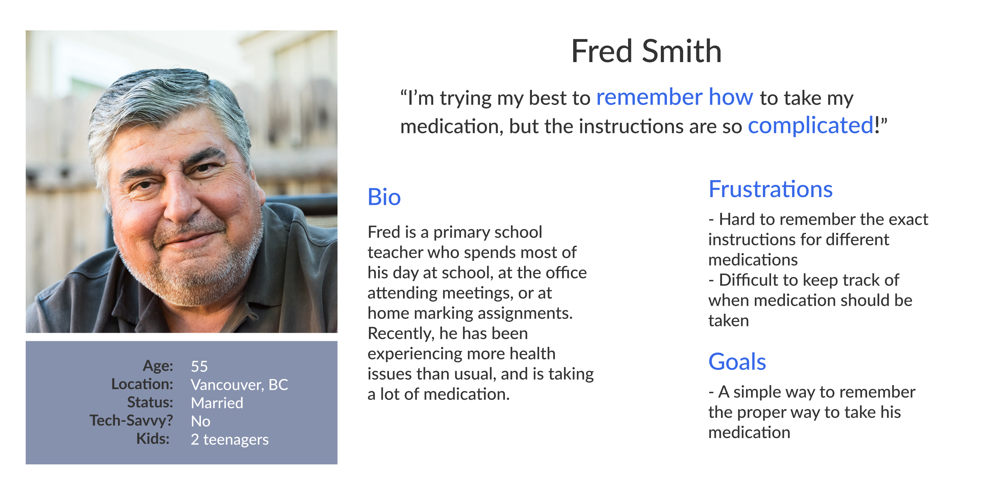

nekoTap
Role
UI/UX Design
Timeline
24 hours
Tools
Figma
Overview
Introduction
Western Canada's largest hackathon, nwHacks, took place at the University of British Columbia. There were 700+ hackers and 132 projects submitted. Our project, nekoTap, ended winning overall first place!
Roles and Responsibiities
I was the designer. I created wireframes, conducted user research, and created the prototypes for handoff to the developers. I also helped with the design of the Android app using Android Studio. My team members consisted of Sherry (developer), Sophie (developer), John (developer), and Russell (developer).
Motivation
On average, half of patients with chronic illnesses like heart disease or asthma don’t take their medication. Reports estimates that poor medication adherence could be costing the country $300 billion in increased medical costs.
When the pharmacy hands over your medication, it usually comes with a stack of papers, stickers on the pill bottles, and then in addition the pharmacist tells you a bunch of mumble jumble that you won’t remember.
The Solution
NekoTap helps patients access important drug instructions quickly and when they need it. The secret behind it is a single NFC chip. This $0.75 piece of paper and mobile app can save the country billions of dollars.
Target Audience
NekoTap's target audience is a patient who needs help remembering how to take medication. Often, these are seniors and children, who have trouble remembering complicated information.
User Persona
Visual Design
Pharmacist's App
Step 1: Product Scan
On the pharmacist's end, he only needs to go through 4 simple steps to record important information for the patient. Each time the pharmacist completes the task, the button will become blue to indicate the step is finished.
The first step is scanning the product. Once the product has scanned successfully, a green checkmark will appear, and then the app will automatically bring you to the next step.
Step 2: NFC Registration
The next step is registering the NFC chip.
To do that, the pharmacist would tap on the medication cap, then enter the prescribed amount.
Step 3: Audio Recording
The next step is recording the audio instructions.
Step 4: Refill Reminder
The last step is to set a refill reminder for the patient. Once this step is complete, all the steps will appear blue, and the submit button text will also turn blue, indicating that all steps are finished.
Patient's App
Step 1: Tap medication
On the patient-facing end, their first step is to tap the medication and get all the important information from the pharmacist.
Screen 1: Play audio
On the first screen, the patient can play the audio recording by the pharmacist.
Screen 2: Text transcription
When the patient swipes left, they can see a text transcription of the recording audio, in case they missed something when during the playback. There are easy to access zoom in and zoom out buttons, as well as a translate option for better accessibility.
.jpg)
.jpg)
.jpg)
.jpg)
Screen 3: Instructional Video
When the patient swipes left again, they can view an instructional video in case they need more visual help.
.jpg)
Reminders and Contact Pharmacist
The bottom left button will allow the patient to set reminders to take the medication, and the bottom right button will allow the patient to call the pharmacist at any time, in case they have more questions
.jpg)
.jpg)
One task per screen
By having one task per screen, it makes the app super easy to use on the patient's end. They can quickly access the information they need.
Future Considerations
Using these inexpensive NFC chips will really open the world to more possibilities in terms of delivering complex medical information in a convenient way. We don't have to be limited to an audio file from the clinician; patient records, test results, and other information can all be considered.